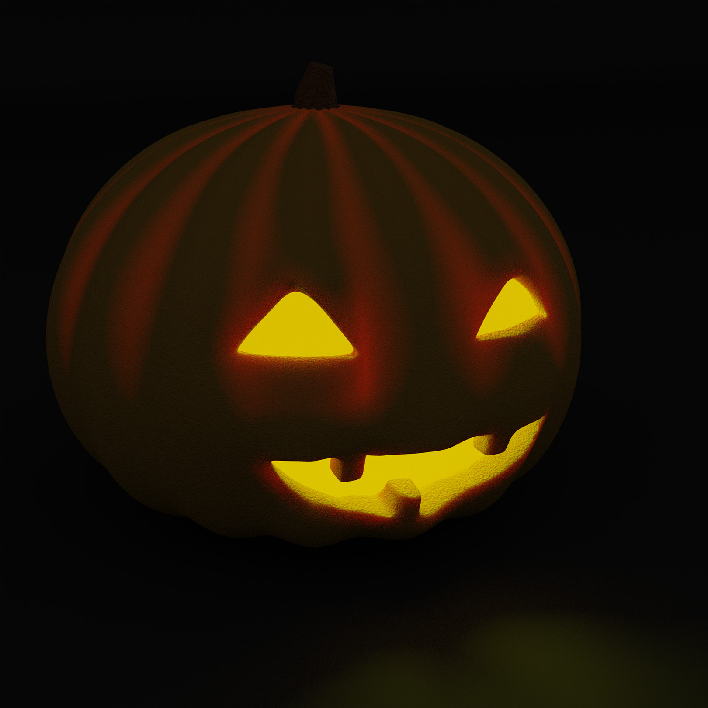
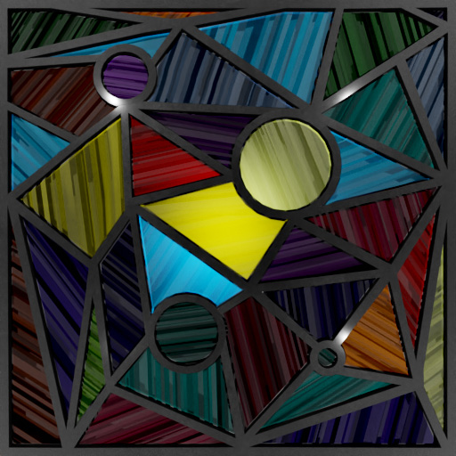

2021/10/30 "TableAndChairTraining"
This may be the first thing I ever made in blender, truly a artifact of the past.
2021/11/2 "PumpkinFinalRender"
It was halloween so I made a Pumpkin. Learned about subsurface scattering.
I remember back then sitting and watching as the renders slowly denoised on my ancient computer, watching as it slowly improved.

2021/11/3 "Frog"
I made a frog I guess.
2021/11/18 "Toaster_PC"
In this one I have learned more about materials. And made a render I thought was funny, the rbg toaster.
2021/12/12 "RTXGlassWindow"
I think I drew a version of this image in Photoshop, and recreated it in blender with the advanced lighting. As to why it has "RTX" in the name.

2021/12/23 "MinecraftHillFinal"
Learned some stuff about remeshing to procedurally make the hill.
2022/1/17 "RockyStoneRendered"
This may be the first time I downloaded a PBR material from the internet. And I wanted to see what details it could form.
2022/4/11 "Donut1"
I actually remember this one very clearly.
There is a common blender tutorial of how to make a donut, and I wanted to prove that I could do it on my own.
And I think I did successfully did it without the tutorial.
2022/5/7 "GrassyHill"
I did some more advanced particle stuff on this one. Remember it took forever to render on that old laptop.